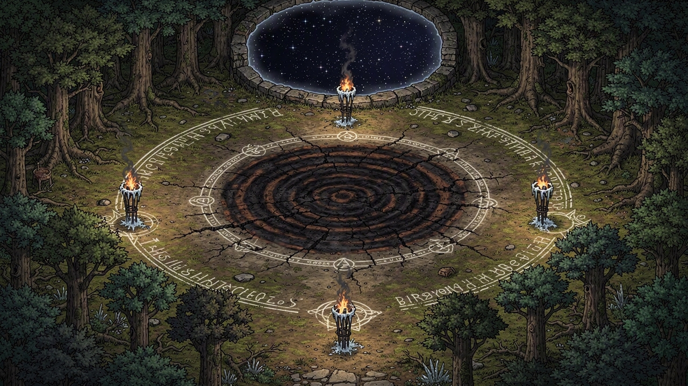

← Act 2 - The Weight of the Work | Oneshot 2 - What Bramble Remembers →
The tracks lead into the deep Thornwood. The party follows them to a cleared glade and finds something large waiting in the dark. This act has no correct answer — the resolution belongs entirely to the players. Magistra Velthrane’s arrival gives them a villain to direct their anger at if they need one, but the emotional core is the conversation with Durgin before she arrives. Protect that conversation. Velthrane can wait.
Scene 1 — The Binding Glade
DM Cue
Pause after the reveal. Do not move to the next beat until the table has reacted. When Durgin speaks, keep his voice warm and a little wry — he is at peace with what he did. Velthrane arrives approximately 10 minutes (real time) after the party first speaks with Durgin-Bramble. Do not let her cut the moment short.
Act 3 Scene 1 Locations
The Binding Glade
Battle Maps
Location When Battle Map The Binding Glade Act 3 
Read Aloud
The trees open into a near-perfect circle, roughly sixty feet across. The canopy closes above it but doesn’t seal — you can see stars through a gap at the centre. The ground is scorched in a large spiral pattern, and the air smells of old copper and frost. Chalk marks trace the spiral outward to the clearing’s edge, worn but still legible, still faintly luminous. Four iron torch stakes stand at the compass points, burned down to nothing. It is very quiet. And then something moves in the trees to the north.
Notable Features
- A scorched spiral at the clearing’s centre, 15 ft. across — the remains of the ritual circle, burned black at the core
- Chalk sigils running outward from the spiral to the tree line, still faintly luminous in dim light
- Temperature several degrees colder than the surrounding wood, with no wind to explain it
- Four iron torch stakes at cardinal positions, burned to nothing — the iron itself is frost-rimed
Hidden Details
- DC 12 — Arcana: The chalk sigils form a two-stage transfer diagram. The first stage anchors the source soul; the second releases it into the target vessel. Both stages completed successfully. This is not a failed experiment.
- DC 15 — Arcana: Two distinct soul-signatures linger in the clearing, partially overlapping. Still present, still active — but not fully integrated. The boundary between them is blurring.
- DC 10 — Perception (after the reveal): The undead owlbear’s breath does not fog in the cold air. Its eyes do not blink at normal intervals. Its body radiates no warmth.
Link to originalDM Note
The glade should feel like a destination, not an arena. When the party first arrives, describe the emptiness before the sound. Give them a moment with the ritual circle — Rindle might crouch to read the sigils, someone might pick up a burned-out torch. The gap in the canopy and the stars above are important: this should feel like the world is watching. The reveal — Durgin-Bramble stepping from the north tree line — should feel like it has been coming since Act 1. Do not rush it.
Act 3 Scene 1 Encounters
What Bramble Remembers
Act: 3 — Act 3 - What Bramble Remembers Location: The Binding Glade Encounter type: Social (Combat optional)
Read Aloud
The sound comes first — low, somewhere between an owl and a moan, too structured for wind. Then you see it step from the north tree line: the size of a draft horse, four-legged, frost-rimed, with pale grey eyes that cast their own faint light. Its feathers are dark where they should be cream-brown. It is breathing, but its breath doesn’t fog in the cold air.
It stops when it sees you. It does not move.
A long moment. Then:
“…you came back.”
Durgin’s voice. Slower than you remember. From somewhere inside the creature.
“I had to see if you would.”
Setup
The undead owlbear — Durgin-Bramble — stands at the north tree line and waits. It will not approach unless the party indicates they want it to. It is not aggressive. Bramble’s instincts surface occasionally (the head tilts; a low sound; brief fixation on something in the dark before Durgin pulls attention back), but Durgin is present and coherent. He has perhaps an hour of lucidity remaining before the two souls blur together fully.
Pause after the reveal. Give the table a moment before Durgin speaks again. Let them react. Then:
“I know what this looks like. I know. I’m sorry about the wall.”
What Durgin Can Say
He is warm, apologetic, and quietly wry about his situation. He is at peace with what he did. He is not at peace with the fact that the party is upset.
- “The research notes were in the journal. I trust you read them. I hope Rindle explained the technical parts — I know I write in shorthand.”
- “I can feel him in here. It’s — it’s like remembering something at the same time you’re being reminded of it. Does that make sense? It probably doesn’t.”
- “Bramble remembers all of you. Specifically — Draco, he’s very fixated on Draco, I don’t know what you did but he thinks very highly of you.”
- “I don’t have a lot of time before — before it becomes more him than me. I’d like to say goodbye properly, if that’s all right.”
- (If asked about the Academium): “They’ll come, probably. They tracked the ritual signature. I expect they’re already on their way.”
Velthrane’s Arrival
Magistra Velthrane arrives with two Academium Sentinels approximately 10 minutes after the party first speaks with Durgin-Bramble — from the east tree line. She takes in the scene and addresses the party rather than the creature:
“The creature is Academium property under the Research Seizure Act. I am prepared to offer formal documentation and a finder’s compensation for its recovery. Please stand aside.”
Social DCs vs. Velthrane:
Approach DC Notes Intimidation 14 She has institutional backing and she knows it Persuasion (ethics) 16 She doesn’t disagree on ethics — she disagrees on jurisdiction Persuasion (Ashworth/Cordelia) 10 This genuinely throws her; she straightens her cuffs twice Deception (timeline misdirection) 15 She is sharp, but can be misdirected about when the transfer completed Ashworth gambit: If Cordelia invokes her family name and the historical donation, Velthrane’s composure cracks visibly. She asks for clarification. On success (DC 10 Persuasion), she agrees to defer to guild adjudication rather than press her claim tonight. She and the sentinels withdraw — “This isn’t over” — and the party has the glade to themselves.
Enemies
Creature CR Count Notes Magistra Velthrane 4 1 Hangs back; Hold Person opener; retreats below 15 HP Academium Sentinel 1/2 2 Shield Bash to protect Velthrane; disengage on her order
Resolution Options
Mercy
Trigger: Durgin asks, or a party member asks on his behalf.
“I’d like to stop, I think. It was — it was worth doing. I don’t regret it. But I’m tired.”
Release ritual: One party member makes a DC 12 Arcana check. Other party members may Help (granting advantage). Durgin talks them through it — he knows exactly what is needed.
- Success: The undead owlbear grows very still. Its pale eyes dim slowly. The chalk sigils on the ground flare once, bright, then go dark. The body settles. Both souls pass on.
- Failure: Durgin’s voice grows quieter, then steadies — “Try again. Shift the anchor left — yes, there.” Automatic success on the retry. He compensates from inside.
If Velthrane is still present: She stands very still through the ritual and says nothing for a long moment after. Then: “I’ll note in my report that the transfer was verified successful.” She and the sentinels leave without further comment.
Durgin’s last words (Mercy): “Thank you for the company.”
Reversal
Trigger: The party attempts to separate the souls rather than release them.
“It might work. I don’t — I don’t know what it would mean for Bramble. For either of us. I think you should try, if you want to try.”
Ritual: DC 17 Arcana check, group effort — all willing party members make the check each round. Requires three successes before two failures across all participants combined.
- Success (3 before 2): The two signatures separate. Durgin’s soul detaches — coherent, at peace, speaking clearly through the process. He has time to say something specific to each party member present (DM discretion — something he noticed during dinner). Then the undead owlbear’s animation fails. It falls. Both Durgin and Bramble are gone. The party gets a proper goodbye.
- Failure (2 before 3): Durgin’s voice stops mid-sentence on the second failure. The owlbear stands very still for a long moment. Then it turns and walks slowly into the dark Thornwood. Only Bramble’s animal instinct remains. He is alive — but Durgin is gone, without a goodbye.
Defiance
Trigger: The party fights off Velthrane’s guards (or bluffs/negotiates them away) and gives Durgin-Bramble a choice rather than making it for him.
“…I think I’d like to keep going for a while. There’s a lot I — Bramble always wanted to see more. He always wanted to see more of everything.”
The undead owlbear turns toward the deep Thornwood. It pauses at the tree line.
“Tell Aldra I’m sorry about the goat. I fixed the circle before I came out here. It should come down on its own.”
Then he goes.
The contract is technically unclosed. Aldra pays the second half of the reward regardless — “the disturbances stopped, didn’t they?” The guild closure note reads: “Disturbances resolved. Cause: experimental necromantic research, now concluded. Researcher status: unknown.”
Scaling
If combat occurs (Velthrane + 2 sentinels vs. 3–4 level 3 players), it is a Deadly encounter. Durgin-Bramble will not fight for the party but will position itself between Velthrane and the party, blocking line of sight and forcing her to reposition — this effectively costs her one action per round.
At 4 players: Run as written. Velthrane opens with Hold Person on the most physically threatening character.
At 3 players: Remove one sentinel. Have Velthrane offer to negotiate after she takes any damage — she is not a martyr.
Link to originalDM Note
Whatever ending the players choose, end on Durgin’s voice. If Mercy: his last words as the light fades are “Thank you for the company.” If Reversal: during the ritual, he addresses each party member by name — something specific he noticed during dinner. If Defiance: he’s gone into the trees before the party thinks to say anything more. That’s fine. That’s the ending that hurts the right way.
After any ending: the glade is quiet. The chalk sigils are dark. The stars are still visible through the gap in the canopy. Give the table a moment before asking if they want to head back to Millhaven.
Act 3 Scene 1 NPCs
Magistra Velthrane
Role: Antagonist (negotiable) First appears: Act 3 Location: The Binding Glade
Personality
- Precise and formal — she speaks in the clipped cadence of someone who has spent decades writing institutional reports
- Genuinely believes the Academium is right and Durgin was wrong; she’s not a villain, she’s an institution wearing a person’s face
- Has a tell when she’s uncertain: she straightens her cuffs, one then the other, before responding
Appearance
A tall human woman in her fifties, silver-streaked dark hair pulled back severely, wearing Academium grey robes with the institutional seal embroidered at the collar in silver thread.
Motivation
Velthrane has been tracking Durgin’s research for six weeks. She does not want the creature harmed — she wants it studied. In her professional assessment, Durgin has produced the first confirmed animus transference in forty years, and losing access to the subject would be a genuine loss to the Academium’s understanding of soul-magic persistence. She is not wrong about the academic significance. She is wrong about everything else.
Secret
Velthrane was the one who denied Durgin’s research waiver six weeks ago. She flagged his application as reckless and forwarded it for rejection herself. She has not processed what it means that she effectively removed the legitimate avenue before he was forced to use himself. If the party confronts her — “you denied his waiver and then drove him to use himself as the subject” — she will not be able to maintain her composure.
Cordelia Hook
The Ashworth name stops Velthrane mid-sentence. The donation predates the current Academium charter and creates a historical patronage claim that pre-empts several of her procedural authorities. She has not encountered this legal situation before. She will ask for clarification and may agree to defer to guild adjudication rather than press further.
Stat Block
Magistra Velthrane
Armor Class 13
Hit Points 45 (10d8)
Speed 30 ft.
STR DEX CON INT WIS CHA 9 (-1) 12 (+1) 11 (+0) 17 (+3) 14 (+2) 13 (+1)
Saving Throws Int +5, Wis +4
Skills Arcana +5, History +5, Insight +4, Deception +3
Senses passive Perception 12
Languages Common, Elvish, Draconic
Challenge 4
Soul Sight. As a bonus action, Velthrane can detect the presence and approximate location of active soul-magic within 60 ft., including animated undead, bound spirits, and animus transfer effects.
Spellcasting. Velthrane is a 7th-level spellcaster (Intelligence, spell save DC 13, +5 to hit). Cantrips: Toll the Dead, Mage Hand. 1st level (4 slots): Shield, Detect Magic, Ray of Sickness. 2nd level (3 slots): Hold Person, Ray of Enfeeblement, Misty Step. 3rd level (3 slots): Counterspell, Vampiric Touch, Animate Dead.
Actions
Quarterstaff. Melee Weapon Attack: +1 to hit, reach 5 ft., one target. Hit: 2 (1d6 - 1) bludgeoning damage.
Toll the Dead. One creature within 60 ft. must succeed on a DC 13 Wisdom saving throw or take 1d12 necrotic damage (or 1d8 if the target is at its hit point maximum).
Necrotic Lance (Recharge 5-6). Ranged Spell Attack: +5 to hit, range 90 ft., one target. Hit: 16 (3d10) necrotic damage.
Reactions
Shield. When hit by an attack, Velthrane casts Shield as a reaction, gaining +5 AC until the start of her next turn (potentially causing the triggering attack to miss). Uses a 1st-level spell slot.
Tactics
Velthrane prefers not to fight. If the party forces combat she immediately casts Hold Person on the most physically threatening character and retreats behind the sentinels. She uses Necrotic Lance against anyone who closes distance and Counterspell to deny high-level party abilities. She will disengage and flee rather than fight to the death — she is not paid enough to die in a forest clearing. If reduced to 15 HP or fewer, she calls for withdrawal.
Link to original
Academium Sentinel
Role: Generic enemy — Arcane Academium guard detail Appears in: Act 3 — What Bramble Remembers
Academium Sentinel
Armor Class 16
Hit Points 26 (4d8+8)
Speed 30 ft.
STR DEX CON INT WIS CHA 15 (+2) 12 (+1) 14 (+2) 10 (+0) 11 (+0) 10 (+0)
Senses passive Perception 12
Languages Common
Challenge 1/2
Actions
Spear. Melee or Ranged Weapon Attack: +4 to hit, reach 5 ft. or range 20/60 ft., one target. Hit: 5 (1d6 + 2) piercing damage.
Shield Bash. Melee Weapon Attack: +4 to hit, reach 5 ft., one target. Hit: 4 (1d4 + 2) bludgeoning damage, and the target must succeed on a DC 12 Strength saving throw or be knocked prone.
Tactics
Sentinels position between Magistra Velthrane and the party at all times. They use Shield Bash to knock prone anyone moving toward Velthrane. They do not pursue fleeing characters and disengage immediately if Velthrane orders withdrawal.
Link to original